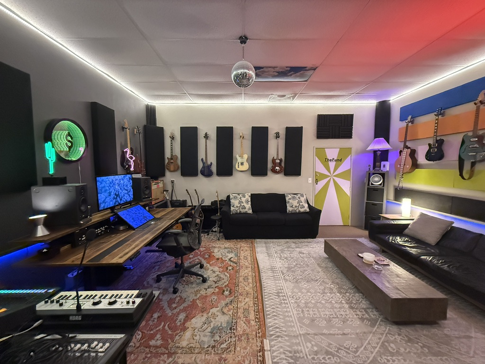

Mixing
Full mixes from your stems. Built to translate on phones, cars, and playlists — not just studio monitors.
Mixing & Mastering · Sound City Center, Van Nuys
I mix and master records for indie and alternative artists — remote from your stems, or in-room at Sound City when the project calls for it.
Full mixes from your stems. Built to translate on phones, cars, and playlists — not just studio monitors.
Final polish for Spotify, Apple, and everywhere else — loud enough, still alive.
One engineer, one consistent chain, fewer handoffs. Best path for most singles.
Production and songwriting available by custom quote when a song needs more than a polish.
| Package | Includes | Price | Turnaround |
|---|---|---|---|
| Master only | Streaming-ready master, 2 revision rounds | $125 / song | 2–4 days |
| Mix | Full mix from stems, 2 revisions, stereo + instrumental | $550 / song | 5–7 days |
| Mix + Master | Mix and master as one pass, 2 revisions | $650 / song | 7–10 days |
| Production + Mix | Arrangement / production help + mix | from $1,500 / song | Scoped |
EP/album bundles: 10–15% off. 50% deposit to start, balance before finals. Extra revision rounds $50.
Tracked on Muso: 292 credits — Top 1% Songwriters, Top 10% Producers, Top 25% Artists, ranked Mixing Engineer. A personal Mix/Master Spotify playlist is coming; for now here’s the live catalog.
Total credits (composer, lyricist, producer, artist, and more)
Songwriters on Muso · Top 10% Producers
Composer 269 · Lyricist 143 · Producer 61 · Primary Artist 56 · Mixing Engineer
I’m Shelby Archer — mixer, mastering engineer, and producer based at Sound City Center in Van Nuys, next to the legendary Sound City Studios.
I came up through Capra (Hollywood Records) and New Beat Fund (Red Bull Records), touring nationally and making records with high-level producers and mixers before shifting into full-time studio work. That path shaped how I work now: practical, fast communication, and mixes built to compete in the real world.
Today I focus on mixing and mastering for independent artists, with production available when a song needs more than a polish.

Tell me what you need (mix, master, or both), how many songs, your deadline, and a private link to the tracks. I’ll reply with a clear quote and deposit link.
Email: shelbyarcher@me.com
Send: service needed, song count, deadline, and a private link to the tracks. I’ll reply with a quote and deposit details.